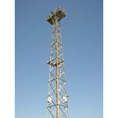
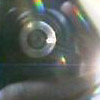
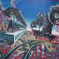
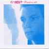
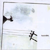
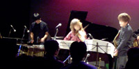
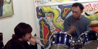
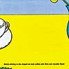
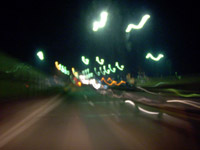
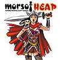

|
 |
#新川崎駅、降りて左上を見る。 ちょっと忙しいです。 CD置く場所が無くなりつつ有ります。 |
| 2003.10 / 2003.12 |

とりあえず、先月末に見たライヴ二個の事を。SAKEROCK,浜野謙太カルテットとchienowa 16 (machine and the synergetic nuts,NATSUMEN,music from the mars,sugar plant)を。SAKEROCKはやっぱり良かったです。っていうかでもその翌々日に見たNATSUMEN(元BOATのAxSxEのバンド)が凄まじかったです。なんかもう途中から固まっちゃうくらい格好良かったよ。 |
オルケスタ・デル・ビエント/風の旅団・劇中音楽集 いぬん堂からリリースされた、「風の楽団」という劇団(1983-1991)の劇中音楽集 音楽は篠田昌巳、大熊亘、工藤冬里など・・80年代アンダーグランドのあの辺のもの。やっぱカッチョイイ。 |
 |
La Neu?/Rembrandt 渋谷ディスクユニオンで\500。La Neu?のRembrandt Lensinkの実質上のソロアルバム。 全然Neu!とは違うのですけど、ドイツらしいエレクトロ。 |
 |
foehn006. 渋谷ディスクユニオンで\1000。 スペインのエレクトロニカのレーベル「foehn」のオムニバス。 最近のフォークトロニカとか呼ばれるジャンル（ほんとにこんなジャンル名一般的なんだろうか？）の良いサンプラーでは有るかも。 |
 |
11.14 壷井彰久+鬼怒無月,おU @ 江古田BUDDY 8年ぶりにおUのライブを見た訳ですよ、おUの。 いやもーその、良かったの何の。今年は良くライブに行ったけど、たぶんコレが最高かなー。 |
 |
11.15 F.H.C.,モーソフ @ 江古田Flying Teapot
んで、翌日は江古田のプログレ喫茶Flying Teapotにて、札幌のF.C.H.とモーソフ（金澤美也子さん入り）を見ました。 F.H.C.はドラム抜けちゃったみたいだけど、この編成の方が個人的には好きかも。短い不思議な曲をたくさん。 モーソフはキーボードの音がM.Ratledgeしてて、ほんとにソフツっぽかった。 |
 |
AMM/Before driving to the chapel we took coffee with Rick and Jennifer Reed #近所の古本屋のカードが溜まったので、買ってきました。Keith Roweとかのいるイギリス最古の即興グループです。 guitar + piano + drumsの3人です。当然全部インプロですけど綺麗って呼んでもイイような音世界、特にピアノの人を気に入りました。 ちなみにジャケもかなり好み、チャールズマンソンのCDとどっち買おうか5分くらい迷ってこっちにしました。 |

#なんで俺ばっかり仕事してんだよっていうか、もー。 |
モーソフ / HEAP～ポンコツ車の宮殿～ #んで、そのイベントにも出ていたモーソフのCDです。基本的にはsax + bass + drumsなんですが、る*しろうのお二人やSAKEROCKのtromboneの人なんかも参加してて賑やか。 bassの人のプレイにソフトマシーンを感じますけど、基本的にはちょっとダークなジャズロック路線。 ちなみに11/15(sat)江古田FLYING TEAPOTでのライヴは\500っす。金澤美也子さまも参加。 モーソフ official site |